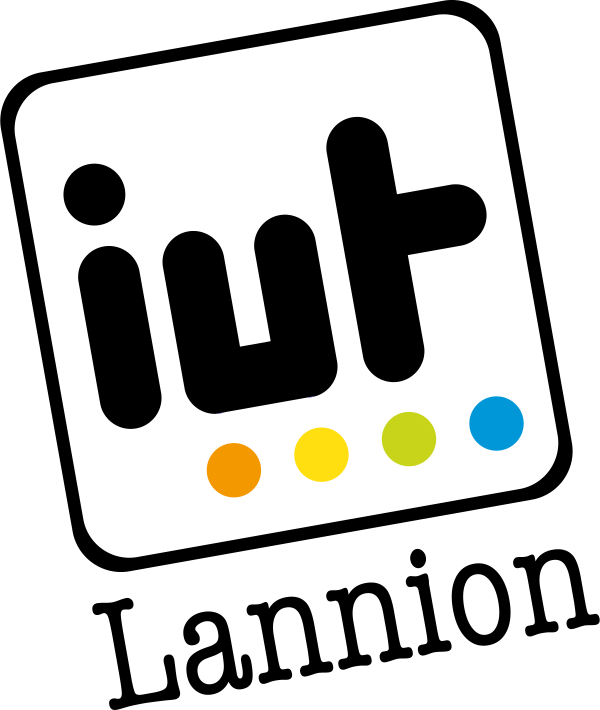

Currently at the end of Semester 1, I continue to see my grades evolve positively which allows me to hope for a positive evolution for the rest of the year (despite average results, I still have the possibility of progressing in the year ). With this choice of BUT R&T, I wanted a complete professional perspective with practice and constant evolution.
I already have professional experience and that is why I want to continue on a work-study program in year 2 of R&T, progress in a company is important to me. I find that the alternation is important because it is much more concrete in terms of notions, I would gain in independence and especially in experience, it would be a real plus for my professional project. For the moment, I know that I would like to move towards cybersecurity / cyberdefense with the Cyber course, I would like to complete a baccalaureate +2 at least.
I had a lot of hesitation during high school, between BTS / BUT and Licenses, I had a choice in terms of training despite an average record. My first choice was to continue in cybersecurity/cyberdefense, so I looked at what training was needed. To arrive in this environment, I noticed that we could have a faster specialization with the BUT R&T unlike the BTS where the real specialization arrives in year 3 (with the professional license) indeed the specialization here arrives with the year 2. As I lived in the Center region, there was only the IUT of Blois available in the region, I did not particularly want this establishment given that it did not offer work-study programs. So I looked at where there was an BUT R&T alternating with the "Cybersecurity" specialty and that's when I arrived at the IUT of Lannion.
I chose BUT R&T in order to have an effective professional integration and to have a substantial background in practice. Indeed, I had noticed before applying for BUT that it was the type of training that best met my expectations, this type of training allowed me to have a practice with professional equipment. So I focused on GOAL to the detriment of BTS / licenses.